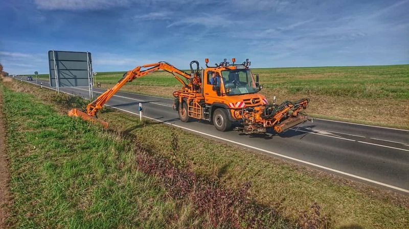
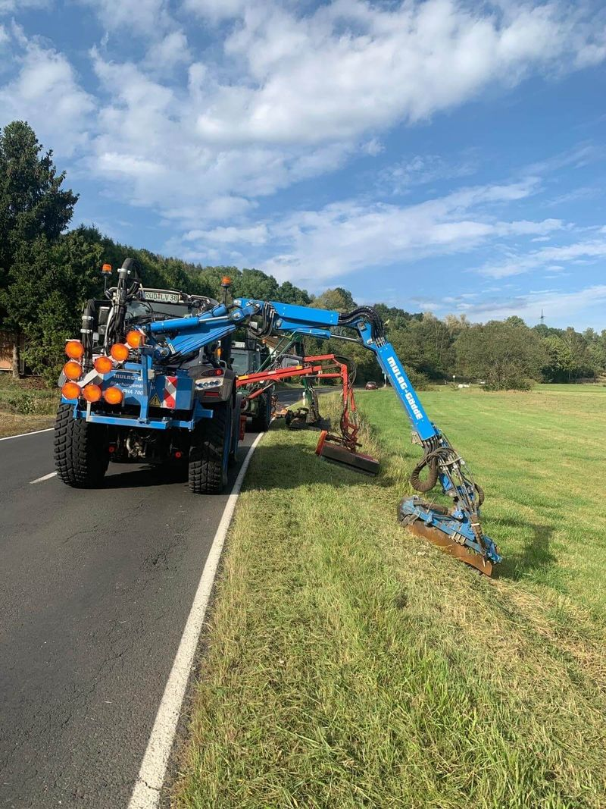
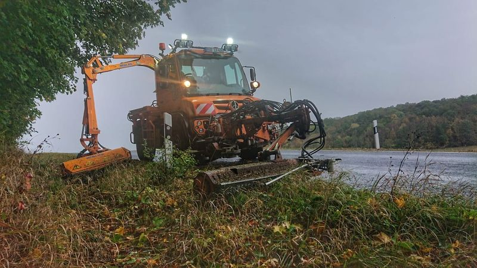
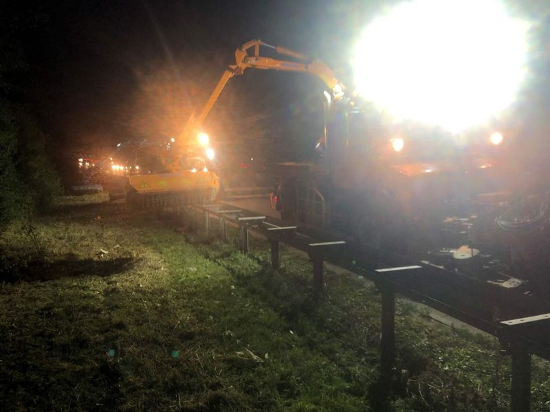
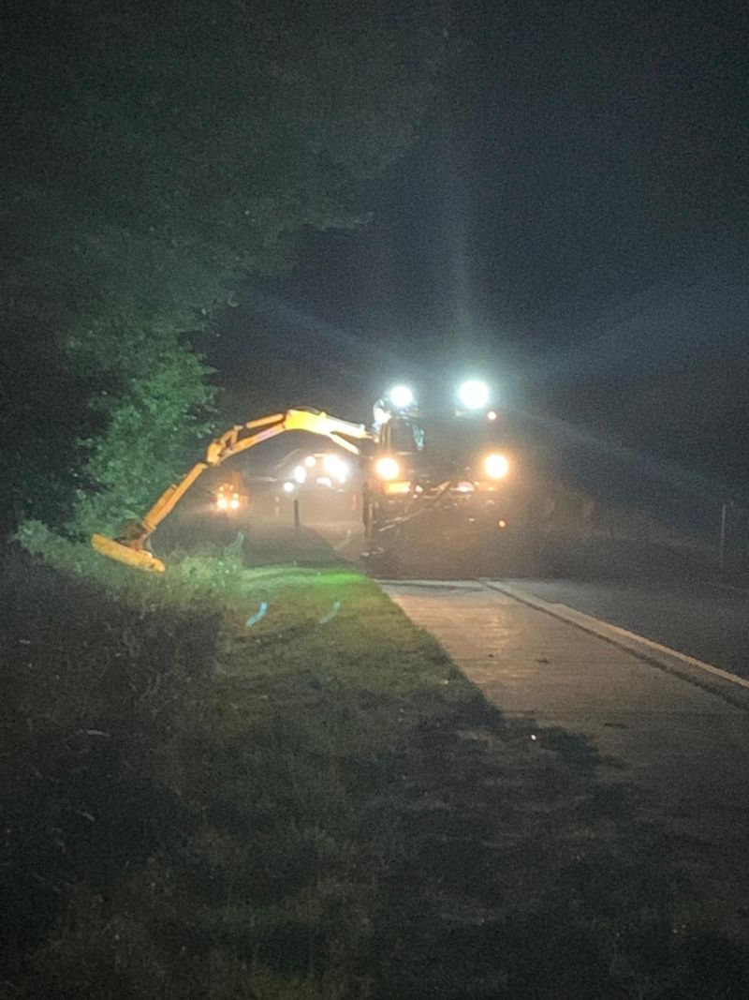
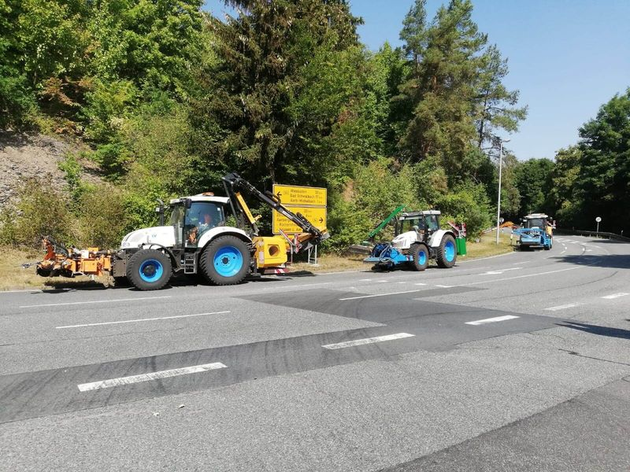
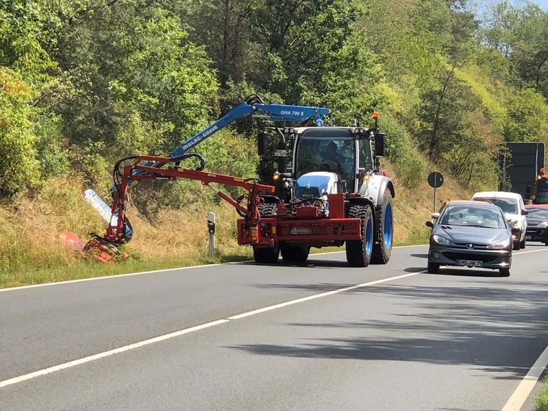

Saison Mai bis Oktober
Mähen Regenrückhaltebecken
Böschungen, Dämme und Zufahrten von Rückhaltebecken. Damit Zulauf und Ablauf frei bleiben und sich auf dem Damm kein Gehölz festsetzt.
Die Leistung
Ein Becken funktioniert nur, wenn es zugänglich bleibt
Regenrückhaltebecken fangen bei Starkregen das Wasser von Straßen und Siedlungsflächen auf und geben es gedrosselt weiter. Den größten Teil des Jahres sind sie trocken oder führen wenig Wasser, und in dieser Zeit wächst es dort kräftig.
Werden Böschungen und Dämme nicht gemäht, setzen sich Sträucher und junge Bäume fest. Ihre Wurzeln können einen Damm schwächen, und Zulauf, Ablauf und Rechen sind bei einer Kontrolle kaum noch zu erreichen.

So arbeiten wir
Vom Rand aus, mit Rücksicht auf das Gewässer
Wo genau gemäht wird und was stehen bleibt, legen wir mit dem Betreiber fest.
- Böschungen und Dämme
- Gemäht mit dem Ausleger von der Dammkrone oder der Umfahrt aus, ohne in die nassen Bereiche zu fahren.
- Zufahrten und Umfahrten
- Damit Kontrolle und Wartung jederzeit mit Fahrzeugen möglich sind.
- Ein- und Auslaufbauwerke
- Rund um Zulauf, Drossel und Rechen wird von Hand freigeschnitten.
- Mähgut aufnehmen
- Das Schnittgut wird abgefahren und soll nicht ins Becken oder vor den Ablauf geraten.
Für wen
Für Betreiber von Rückhaltebecken
Rückhaltebecken gehören je nach Zweck sehr unterschiedlichen Stellen.
Wasser- und Abwasserverbände
Becken im Kanal- und Gewässernetz, die regelmäßig gepflegt und kontrolliert werden müssen.
Städte und Gemeinden
Becken in Baugebieten und an Gewerbeflächen, oft betreut von Eigenbetrieben der Stadtentwässerung.
Straßenbaulastträger
Becken, die das Wasser von Straßen und Autobahnen sammeln, und ihre Zufahrten.
Weitere Leistungen
Was wir außerdem mähen und schneiden
-

Mähen von Straßenbegleitgrün
Bankette, Gräben und Böschungen an Bundes-, Landes- und Kreisstraßen. Gemäht mit Ausleger und Frontmähwerk, an Leitpfosten und Schildern von Hand.
-

Mähen Gehölz Mittelstreifen
Gras und Gehölzaufwuchs zwischen den Schutzplanken. Mit Schlegel- oder Häcksel-Mähkopf, das Mähgut wird direkt abgesaugt.
-

Mähen an Radwegen
Seitenstreifen an straßenbegleitenden und freien Radwegen. Damit der Weg in voller Breite nutzbar bleibt und in Kurven die Sicht frei ist.
-

Mähen Sonderflächen
Kreisverkehre, Verkehrsinseln, Einmündungen, Lärmschutzwälle und andere Flächen, die in keinen Standardumlauf passen.
-

Gehölzrückschnitt
Äste und Sträucher, die in den Verkehrsraum wachsen oder Schilder verdecken. Rückschnitt, Abtransport und Entsorgung aus einer Hand.
Anfrage
Wie viele Becken betreuen Sie?
Nennen Sie uns Lage, Größe und die gewünschten Mähtermine. Wir melden uns mit einer Einschätzung und einem Angebot.